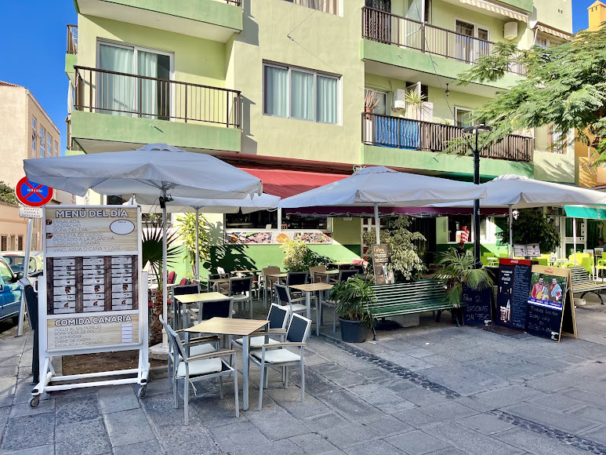

No. 22Canarian tasca · Puerto Viejo, Puerto de la Cruz
TascaEl Arado
4,4 955 reviews on GoogleReal Canarian food and a family welcome. Goat, almogrote, island cheese and the cheesecake everyone orders.

01The menu
Always on the table
- 01
Goat stew
The classic Canarian recipe, slow-cooked. What almost every guest tells you to order.
- 02
Entrecôte with almogrote
Topped with the traditional Gomeran cheese spread.
- 03
Local cheeses
A selection of Canarian cheeses to share.
- 04
Homemade cheesecake
The house dessert. Made here.
Also: papas con mojo, fish, salt cod and the daily set menu chalked on the board by the door.
Average spend approx. €10–20 per person
02What guests say
Almost a thousand Google reviews. Here are a few.
955 reviews · Google
87 reviews · TripAdvisor
“100% Canarian food. Very warm, family-style service — you feel at home.” (translated)
“You eat really well here, real food. If you want to try typical Canarian food, this is your place.” (translated)
“Excellent! A must! The food is amazing, really homemade and very traditional.”
“The goat meat — absolutely delicious.” (translated)
“Typical home cooking […] Wonderful service.” (translated)
“Delicious food and the friendliest service.” (translated)
03The house
Home cooking, the way it's always been
At El Arado we cook the way it's done at home: goat, local cheeses, entrecôte with almogrote and homemade desserts.
A traditional tasca on Lugar Puerto Viejo, with tables out on the terrace, a family atmosphere and, some nights, live music.
- Cuisine
- Canarian home cooking
- Atmosphere
- Family-run
- Some nights
- Live music
- Payment
- Card and cash
04Visit us
It fills up. Best to call ahead.
Opening hours
| Tuesday to Saturday | 12:00–16:00 · 19:00–23:30 |
|---|---|
| Sunday & Monday | Closed |
Hours are indicative: please confirm by phone.